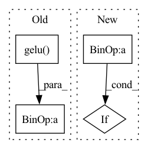

Pattern ID :26938
Before Change
x1 = self.conv0(x)
x2 = self.w0(x)
x = x1 + x2
x = F.gelu( x)
x1 = self.conv1(x)
x2 = self.w1(x)
x = x1 + x2
x = F.gelu(x)
x1 = self.conv2(x)After Change
x1 = self.convs[i](x)
x2 = self.ws[i](x)
x = x1 + x2
if i < self.n_layers - 1:
x = F.gelu(x)
x = x[..., :-self.padding, :-self.padding]In pattern: SUPERPATTERN
Frequency: 3
Non-data size: 4
Instances Fragment ID: 80276680
Project Name: alasdairtran/fourierflow
Commit Name: 7842a35de15675d4f30589c1775d21ed818e352c
Time: 2022-09-22
Author: alasdair.tran@gmail.com
File Name: fourierflow/modules/fno_mesh_2d_airfoil.py
M Class Name: FNOMesh2DAirfoil
N Class Name: FNOMesh2DAirfoil
M Method Name: forward(2)
N Method Name: forward(2)
M Parent Class: nn.Module
N Parent Class: nn.Module
M File Name: fourierflow/modules/fno_mesh_2d_airfoil.py
N File Name: fourierflow/modules/fno_mesh_2d_airfoil.py
M Start Line: 83
M End Line: 102
N Start Line: 84
N End Line: 93
Before Change
def __call__(self, x):
x2 = self.seq(x)
z = self.drop(self.out(self.drop(nn.gelu( x2) )))
return self.norm(z + x)
// We can then stack a bunch of these blocks on top of each otherAfter Change
else:
x = self.out(x)
x = skip + self.drop(x)
if not self.prenorm : x = self.norm(x)
return x
Fragment ID: 80276683
Project Name: srush/annotated-s4
Commit Name: 81c8eb2d2fbf9a6896f80adbf11d290e0f177b4e
Time: 2022-06-05
Author: albertfgu@gmail.com
File Name: s4/s4.py
M Class Name: SequenceBlock
N Class Name: SequenceBlock
M Method Name: __call__(2)
N Method Name: __call__(2)
M Parent Class: nn.Module
N Parent Class: nn.Module
M File Name: s4/s4.py
N File Name: s4/s4.py
M Start Line: 642
M End Line: 644
N Start Line: 646
N End Line: 656
Before Change
x1 = self.conv0(x)
x2 = self.w0(x)
x = x1 + x2
x = F.gelu( x)
x1 = self.conv1(x)
x2 = self.w1(x)
x = x1 + x2
x = F.gelu(x)
x1 = self.conv2(x)After Change
x1 = self.conv0(x)
x2 = self.w0(x)
x = x1 + x2
if i < self.n_layers - 1:
x = F.gelu(x)
x = x[..., :-self.padding, :-self.padding, :-self.padding] Fragment ID: 80276684
Project Name: alasdairtran/fourierflow
Commit Name: acdcecd8eb57a74b265133c5ba7b6e04d64c0505
Time: 2022-09-26
Author: alasdair.tran@gmail.com
File Name: fourierflow/modules/zongyi_fno/mesh_3d.py
M Class Name: FNOMesh3D
N Class Name: FNOMesh3D
M Method Name: forward(2)
N Method Name: forward(2)
M Parent Class: nn.Module
N Parent Class: nn.Module
M File Name: fourierflow/modules/zongyi_fno/mesh_3d.py
N File Name: fourierflow/modules/zongyi_fno/mesh_3d.py
M Start Line: 93
M End Line: 110
N Start Line: 93
N End Line: 100